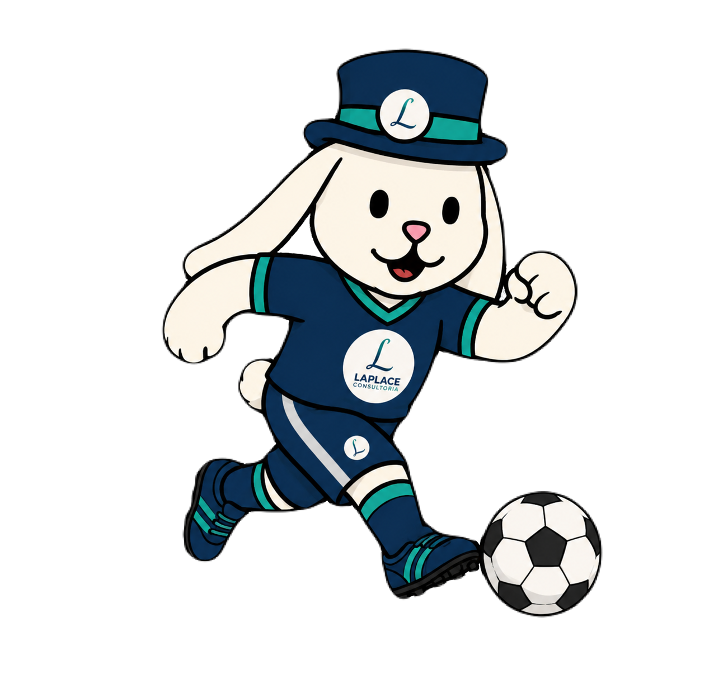

Copa & Dados
Uma iniciativa da Laplace Consultoria (IME/UFU) aplicando Estatística, Matemática Computacional e Ciência de Dados para analisar a Copa do Mundo.
Uma iniciativa da Laplace Consultoria (IME/UFU) aplicando Estatística, Matemática Computacional e Ciência de Dados para analisar a Copa do Mundo.

A Laplace Consultoria une ciência, inovação e o esporte mais popular do mundo. Transformamos números brutos das partidas em inteligência estratégica, demonstrando na prática como a modelagem matemática e a estatística podem mapear o desempenho de seleções, prever resultados e automatizar a coleta de estatísticas.
Integração de sistemas e webscraping para capturar dados das partidas: posse de bola, desarmes, finalizações e movimentação tática dos jogadores.
Desenvolvimento de algoritmos em Python e R para criar mapas de calor, gráficos de redes de passes e métricas avançadas de desempenho tático.
Monitoramento e análise da opinião pública durante os jogos. Identificação de tendências e percepções da torcida para estratégias de marketing.